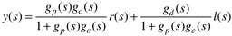
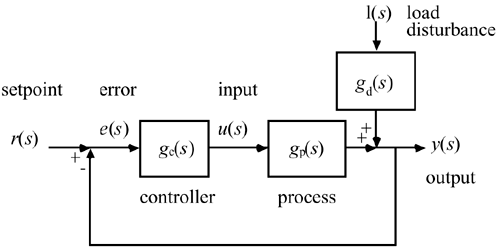
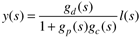
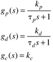
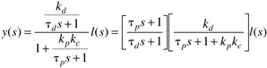
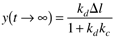

| [ Team LiB ] |
|
5.7 Response to DisturbancesConsider the block diagram in Figure 5-17, which has both setpoint and load disturbance signals. It is easy to derive the following closed-loop relationship:  Figure 5-17. Control block diagram including a load disturbance. In our previous analysis we have been assuming that there is no load disturbance entering the process; that is, our concern has been with setpoint responses. In this section we analyze disturbance rejection (or the response to load disturbances) in detail. Assume that there is no setpoint change, that is, r(s) = 0,  Notice that a disturbance does not affect the stability of a system (as long as the disturbance transfer function itself is stable), because the closed-loop characteristic equation [1 + gp(s)gc(s)] is the same for setpoint tracking or disturbance rejection. Example 5.4: First-Order Process and Load Transfer Functions with P-Only ControlConsider a first-order process and disturbance with proportional control  The effect of the load disturbance on the output is  We see that this system is stable as long as kc is tuned to satisfy 1 + kpkc > 0. Since we are dealing with deviation variables and we have made no setpoint change, we desire for y to stay as close to 0 as possible. Consider a step load disturbance of l(s) = Dl/s. Using the final-value theorem, we find that  which will be a small value as long as the disturbance magnitude (Dl) is low, the disturbance gain (kd) is low, or the controller gain (kc) is high. Since it is undesirable to have offset, we would use a PI controller, in practice, to remove the offset (see Exercise 24). |
| [ Team LiB ] |
|